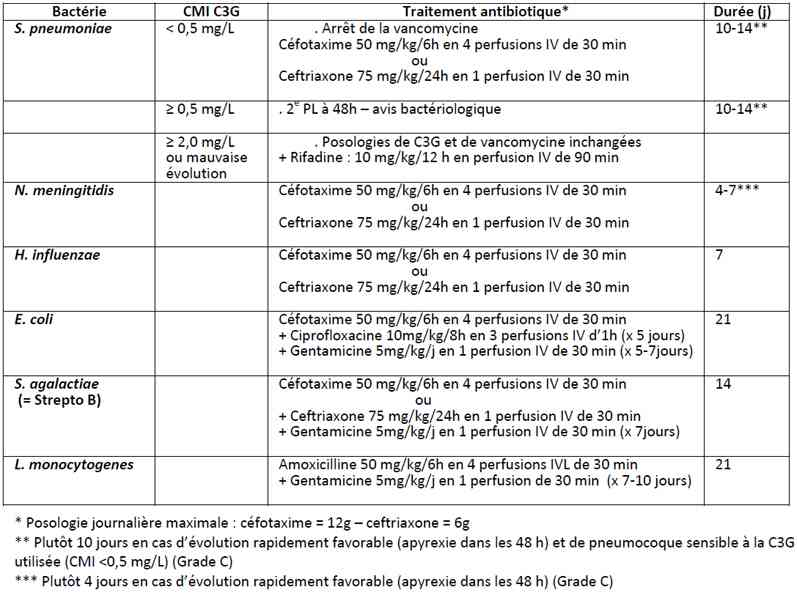

Bienvenue Sur Medical Education
Méningites de l'enfant
EnfantSpécialité : infectieux / neurologie / pédiatrie /
Points importants
-
Méningites bactériennes / méningites virales
-
Mortalité importante : 10% des méningites bactériennes (choc infectieux, hypertension intracrânienne HTIC)
-
Séquelles neurologiques sévères (retard mental, épilepsie, surdité, hydrocéphalie) dans 30% des méningites bactériennes
-
Urgence diagnostique : PL au moindre doute
-
Urgence thérapeutique :
-
si purpura fulminans : ceftriaxone 50 mg/kg en IV ou IM immédiatement
-
antibiothérapie le plus précocement possible, idéalement dans les 30 min après la PL et/ou 1-2 hémocultures en cas de contre-indication à la PL
-
La mise en œuvre d’une corticothérapie avant ou en même temps que l’antibiothérapie diminue les séquelles notamment auditives
Présentation clinique / CIMU
SIGNES FONCTIONNELS
- si purpura fulminans : ceftriaxone 50 mg/kg en IV ou IM immédiatement
- antibiothérapie le plus précocement possible, idéalement dans les 30 min après la PL et/ou 1-2 hémocultures en cas de contre-indication à la PL
Présentation clinique / CIMU
SIGNES FONCTIONNELS
Chez l’enfant
- AEG
- Céphalées
- Rachialgies
- Nausées, vomissements
- Constipation (signe tardif) ou diarrhées
- Hyperthermie (souvent > 38,5°C)
- Couché en chien de fusil, évitant le bruit et la lumière
Chez le nourrisson
-
Tableau polymorphe et trompeur :
- somnolence, cris ou gémissements
- refus du biberon
- hypotonie
- fontanelle bombée, anormalement tendue
- symptomatologie digestive
- convulsions
CONTEXTE
Fonction du type de germe
-
Neisseria meningitidis (méningocoque) :
- signes cutanéo-muqueux : rash cutané, purpura pétéchial, ecchymotique ou nécrotique
- arthralgies
- notion d’épidémie, de contage
-
Streptococcus pneumoniae (pneumocoque) :
- début brutal
- recherche d’un terrain favorisant : enfant splénectomisé, drépanocytaire homozygote ou immunodéprimé
- recherche d’une porte d'entrée ORL (rhinorrhée, otite, sinusite), pulmonaire ou ostéo-méningée (TC, chirurgie de la base du crâne)
-
Haemophilus influenzae :
- âge < 5 ans et absence de vaccination
- début souvent insidieux
-
Listeria monocytogenes :
- enfant en dehors de la période néo-natale
- état d’immunodépression
-
Virale (entérovirus) :
- épidémies estivales ou automnales
Facteurs de risque
- Déficit en complément, polymorphismes du TN-R, Mannose-Binding Lectin Protein, Plasminogen Activating Inhibitor-1, etc. favorisant la survenue d’une forme sévère de purpura fulminans
Circonstances de survenue
- Parfois survenue de foyers épidémiques
EXAMEN CLINIQUE
Examen réalisé sur un enfant dénudé, au calme, en présence de ses parents
-
Chez le nourrisson et le petit enfant :
- hypotonie
- fontanelle bombée
- survenue d’une convulsion dans un contexte fébrile chez un nourrisson de 9-12 mois
-
Chez le grand enfant :
- raideur de nuque
- signe de Kernig (flexion des genoux si l’on fait asseoir l’enfant sur le lit)
- signe de Brudzinski (la flexion passive de la nuque fait plier les genoux)
Recherche systématique d’un purpura fulminans
- Purpura comportant au moins un élément nécrotique ou ecchymotique, de diamètre ≥ à 3 mm
Recherche de signes de rhombencéphalite
- Atteinte des paires crâniennes, syndrome cérébelleux : en faveur d’une méningite à listeria monocytogenes
EXAMENS PARACLINIQUES SIMPLES
- Monitorage de la FC et de la PA (bradycardie et accès d’HTA sont évocateurs d’HTIC), de la FR et de la SpO2, de la T° et de la glycémie (au moment de la PL)
- Surveillance du Glasgow Coma Score – prudence si GCS < 12
- Glycémie capillaire (si convulsion ou altération de l’état général)
CIMU
- Tri 1 à 4 selon la gravité clinique (choc, HTIC)
Signes paracliniques
BIOLOGIQUES
-
NFS (leucocytose à PNN)
-
Bilan de coagulation TP, TCA (CIVD)
-
CRP, PCT (syndrome inflammatoire, orientation vers une origine bactérienne ou non)
-
Ionogramme sanguin (déshydratation par vomissements, hyponatrémie par SIADH)
-
Antigénémie pneumocoque (BinaxNow®)
-
Hémocultures :
-
quantite à prélver : 2 mL de sang si < 2 ans, 5 mL de 2 à 10 ans, 10 mL après 10 ans
-
systématique avant antibiothérapie (indispensable si contre-indication à la PL)
-
ECBU
-
PL (faire une glycémie capillaire au moment de la PL)
-
_740
Tableau
Normalité du LCR en fonction de l'âge
-
3 tubes secs stériles (20 gouttes par tube) pour étude biochimique, cytologique et bactériologique (coloration de gram et mise en culture)
-
PCR méningocoque, PCR pneumocoque ou PCR universelle
-
antigènes solubles pneumocoque (BinaxNow®)
-
lactate
-
contre-indications à la PL si :
-
anomalie connue de l’hémostase, traitement anticoagulant efficace, suspicion clinique d’un trouble majeur de l’hémostase (saignement actif)
-
présence de signes d’engagement (mydriase unilatérale, hoquet, anomalies ventilatoires, mouvements d’enroulement, instabilité hémodynamique)
-
faire systématiquement des hémocultures en cas de contre-indication à la PL avant l’antibiothérapie
IMAGERIE
- quantite à prélver : 2 mL de sang si < 2 ans, 5 mL de 2 à 10 ans, 10 mL après 10 ans
- systématique avant antibiothérapie (indispensable si contre-indication à la PL)
- _740 Tableau Normalité du LCR en fonction de l'âge
- 3 tubes secs stériles (20 gouttes par tube) pour étude biochimique, cytologique et bactériologique (coloration de gram et mise en culture)
- PCR méningocoque, PCR pneumocoque ou PCR universelle
- antigènes solubles pneumocoque (BinaxNow®)
- lactate
-
contre-indications à la PL si :
- anomalie connue de l’hémostase, traitement anticoagulant efficace, suspicion clinique d’un trouble majeur de l’hémostase (saignement actif)
- présence de signes d’engagement (mydriase unilatérale, hoquet, anomalies ventilatoires, mouvements d’enroulement, instabilité hémodynamique)
- faire systématiquement des hémocultures en cas de contre-indication à la PL avant l’antibiothérapie
Scanner cérébral avant la PL, uniquement si
- Signes de localisation neurologique
- Score de Glasgow < 12
- Convulsion focale ou généralisée après l’âge de 5 ans ou si crise partielle hémicorporelle avant 5 ans
- Le scanner ne doit jamais retarder l'antibiothérapie : débuter l’antibiothérapie dans l’heure qui suit l’admission, après hémoculture
Indications d’imagerie cérébrale au cours du traitement
-
Persistance :
- d’une fièvre > 38,5°C inexpliquée > 72h après le début d’un traitement antibiotique bien conduit (vérifier les posologies et le mode d’administration)
- de céphalées
- de troubles de conscience
- d’une augmentation rapide du périmètre crânien
-
Survenue de nouveaux signes neurologiques :
- crises convulsives
- hémiparésie
- paralysie des nerfs crâniens en dehors d’un VI isolé
- accentuation des céphalées
- modifications visuelles
-
L’imagerie doit être systématique :
- en cas de méningite à pneumocoque chez l’enfant > 2 ans
- ou si le sérotype incriminé était inclus dans le vaccin reçu
- en cas de méningite à bactérie inhabituelle (Staphylocoque, Entérobactérie…) ou polymicrobienne (sinus dermique)
Radiographie pulmonaire
- Recherche d’une pneumopathie (retrouvée dans 50% des cas des méningites à méningocoque ou à pneumocoque)
Diagnostic étiologique
MENINGITE VIRALE
-
Entérovirus majoritairement (caractère épidémique et estival)
-
CMV, EBV, VZV plus rarement
-
HSV rechercher des signes de méningo-encéphalite sauf chez le nouveau-né (méningite)
MENINGITE BACTERIENNE
1er mois de vie
- Streptocoque du groupe B (60%)
- E. coli (30%)
2e mois de vie
- Streptocoque du groupe B (50%)
- E. coli (15%)
- Méningocoque (15%)
- Pneumocoque (10%)
De 3 à 12 mois
- Pneumocoque (45%)
- Méningocoque (40%)
- Rarement : Streptocoque du groupe B, Haemophilus influenzae, E.coli
Après 1 an
- Méningocoque
- Pneumocoque
- Haemophilus influenzae plus rarement
FACTEURS PREDICTIFS D’UNE MENINGITE BACTERIENNE VERSUS UNE MENINGITE VIRALE
Critères de Nigrovic (si aucun des 5 critères, très faible probabilité de méningite bactérienne)
- Bactéries à l’examen direct et/ou détection d’antigènes solubles par BinaxNow® (test immuno-chromatographique pour le pneumocoque)
- Protéinorrachie ≥ 0,8 g/L
- Polynucléaires sanguins ≥ 10 000 mm3
- Convulsions cliniques avant ou après l’admission
- Polynucléaires LCR ≥ 1 000 mm3
Critère supplémentaire Conférence de consensus
- Faible probabilité de méningite bactérienne si lactate LCR < 3,2 mmol/L
Critère ajouté par Dubos (Méningitest®)
- Faible probabilité de méningite bactérienne si PCT < 0,5 µg/L
Diagnostic différentiel
D’un nourrisson fébrile sans point d’appel clinique
- Otite moyenne aiguë (savoir examiner un tympan – consultation ORL)
- Pneumonie aiguë (demander une radio de thorax de face + profil si besoin)
- Infection urinaire ou pyélonéphrite aiguë (demander une BU / ECBU)
- Ostéomyélite/ostéo-arthrite aiguë (radio de squelette, échographie des articulations)
- Virose, syndrome grippal (TDR virus respiratoires)
D’un syndrome méningé
- Syndrome de Grisel (torticolis post-infectieux)
- Abcès rétro-pharyngien
- Tumeur de la fosse postérieure
- Abcès intracrânien
D’un LCR anormal
- Hémorragie méningée qu’il faut distinguer d’une piqûre vasculaire au cours de la PL : prélever 3 tubes secs stériles (20 gouttes par tube), afin de pouvoir différencier une piqûre vasculaire (1er tube hémorragique) d’une hémorragie méningée (3 tubes hémorragiques)
Traitement
TRAITEMENT PREHOSPITALIER
Si purpura fuminans
- Ceftriaxone 50 mg/kg en IV ou IM immédiatement
Si sepsis sévère
- Remplissage vasculaire : NaCl 0,9% 20 mL/kg en 10 minutes, jusqu'à 3 fois si nécessaire
- Catécholamines en perfusion IV continue
Transport médicalisé
Protection du personnel
TRAITEMENT INTRAHOSPITALIER
Corticothérapie
-
La dexaméthasone peut diminuer les séquelles auditives en cas de méningite bactérienne à H. influenzae et à S. pneumoniae, si elle était administrée par voie IV environ 15 min avant ou en même temps que la première injection d’antibiotiques. Elle doit être utilisée en cas de :
-
diagnostic confirmé de méningite bactérienne (Grade A) :
- à S. pneumocniae (cocci G+ au direct et/ou BinaxNow® positif dans le LCR)
- ou à H. influenzae (bacille G- et/ou ag solubles + dans le LCR) chez l’enfant
-
diagnostic présumé de méningite bactérienne chez le nourrisson âgé de 2 à 12 mois chez qui le pneumocoque est le premier germe à envisager :
- LCR trouble à la ponction lombaire
- examen direct négatif (antibiothérapie préalable) mais forte suspicion de méningite bactérienne sur les autres données du LCR ou du sang
-
diagnostic confirmé de méningite bactérienne (Grade A) :
- La corticothérapie n’est pas indiquée en cas de méningite suspectée ou confirmée à méningocoque chez l'enfant
Antibiothérapie
- Traitement de 1ère intention des méningites bactériennes en fonction de l’examen direct du LCR
- Urgence absolue. Elle doit être instaurée, idéalement dans l’heure qui suit l’arrivée à l’hôpital, au plus tard dans les 3 heures : chaque heure qui passe sans antibiotique est marquée par une multiplication bactérienne exponentielle qui est responsable de l’augmentation des séquelles
- Antibiothérapie initiale proposée chez l’enfant par le GPIP/ACTIV qui se démarque des recommandations adoptées par la Conférence de consensus sur les Méningites organisée par la SPILF 2008
Traitement symptomatique
- Pas de restriction hydrique – perfusion 100mL/kg/24h de NaCl 0,9% ou de B26 (4g/L)/B46 (3g/L NaCl), afin de prévenir la survenue secondaire d’une hyponatrémie par SIADH éventuel
- Maintien d’une normothermie < 38,5°C par paracétamol IV (15mg/kg/6h)
Traitement des complications
-
Traitement des convulsions :
- pas de bénéfice à un traitement préventif
- antiépileptiques conventionnels : diazépam 0,3 à 0,5 mg/kg en IR à renouveler une fois
-
Traitement de l’HTIC :
- traitement de l’hypotension par remplissage vasculaire et inotropes
- NaCl 0,9% : 20 mL/Kg en 10 min à renouveler une fois
- si échec : noradrénaline : 0,05 à 1-2 µg/kg/min IVSE
- surélévation de la tête à 20-30°
- sédation
- contrôle thermique
-
en cas d’engagement :
- NaCl 10% 1 mL/kg en 10 min ou mannitol à 20% 2,5 mL = 0,5 g/kg IV en 20 min
- intubation et ventilation mécanique (transfert en Réanimation)
Adaptation de l’antibiothérapie en cas d’évolution défavorable
-
Si persistance de la fièvre > 38,5°C, apparition de nouveaux signes neurologiques
- poursuite de la C3G et de la vancomycine à une posologie maximale
- adjonction de rifadine® 10mg/kg/12h IV en deux perfusions d’1h30 dans les méningites à pneumocoque
-
il est recommandé de rechercher un foyer infectieux non drainé :
- otite moyenne aiguë (30% des méningites à pneumocoque sont associées à une OMA) : paracentèse recommandée
- mastoïdite aiguë : antibiotiques et drainage de l’oreille moyenne par paracentèse ; chirurgie indiquée si l’évolution n’est pas favorable > 48h
- sinusite aiguë : drainage sinusien
- en cas de mastoïdite ou de sinusite, adjonction de métronidazole : 10 mg/kg/8h en 3 perfusions d’1 heure
MEDICAMENTS
Antibiotiques
_741 Tableau Antibiotiques dans la méningite de l'enfant
Corticoïdes
- Soludécadron® IV (1 amp = 1 mL = 4 mg) 0,15 mg/kg/6h par voie IV x 4 jours
Prophylaxie chez les sujets contacts
Pour la méningite à méningocoque
- Déclaration obligatoire
-
Antibioprophylaxie le plus précocement possible :
-
rifampicine pendant 2 jours :
- adulte : 600 mg deux fois/j
- enfant de 1 mois à 12 ans : 10 mg/kg 2 fois/j
- nouveau-né : 5 mg/kg deux fois/j
- CI : grossesse, maladie hépatique sévère, alcoolisme, porphyries, hypersensibilité à la Rifampicine
-
si contre-indication à la Rifampicine :
- Spiramycine pendant 5 jours: adulte : 3 millions d'UI deux fois/j ; enfant : 75 000 UI/kg deux fois/j
- ou alternativement : Ciprofloxacine en dose unique : adulte : 500 mg; enfant : 20 mg/kg (max 500 mg) PO
-
rifampicine pendant 2 jours :
Vaccination possible pour les souches A et C
Surveillance
CLINIQUE
Réponse au traitement
- Etat de conscience
- Apyrexie
- Alimentation
PL à 36 - 48 heures
- Objectif : stérilisation du LCR ?
- Si l’évolution clinique est défavorable et que le scanner n’explique pas l’échec
- En cas de méningite à pneumocoque
PARACLINIQUE
Scanner cérébral ou échographie transfontanellaire
- Recherche d’une complication intracrânienne (hydrocéphalie, abcès, empyème, hémorragie, ventriculite)
Audiogramme
- Systématique et répété durant la 1ère année
Devenir / orientation
CRITERES D’ADMISSION
Hospitalisation systématique pour les méningites bactériennes
Critères d’admission en réanimation
- Purpura extensif
- Troubles de la conscience
- Sepsis sévère
- Forme sévère (recherche d’une paralysie du III : signe d’engagement)
- Convulsions, état mal épileptique
Durée du traitement antibiotique
- Adaptation de l’antibiothérapie après documentation microbiologique et détermination des CMI (E-test) à 48h de traitement
 _742 Tableau Durée du traitement antibiotique
Suivi ultérieur des enfants avec méningite bactérienne
- Avant la sortie de l’hôpital ou au plus tard dans les 15 jours après la fin du traitement antibiotique, il faut réaliser un examen neurologique et un test auditif adapté à l’âge
- Suivis neurologique et auditif doivent être répétés à 3 mois et à 1 an d’évolution, afin de dépister une surdité et des difficultés scolaires tardives
- Les implants cochléaires doivent être programmés avant le 6e mois d’évolution de la méningite
- En cas de méningites bactériennes récidivantes ou d’un germe inhabituel : rechercher une brèche méningée
- En cas d’infections bactériennes sévères récidivantes, il convient de discuter des recherches immunologiques spécialisées
Algorithme
-
Algorithme des méningites de l’enfant
_743 Algorithme Algorithme : méningites de l'enfant
Bibliographie
-
SPILF. 17e conférence de consensus en thérapeutique anti-infectieuse : Prise en charge des méningites bactériennes aiguës communautaires. Texte court Paris, 19 Novembre 2008. Médecine, Mal Infect 2009 ; 39:175-186.
-
Chin RFM, Neville BGR, Peckal C, Bedford H, Wade A, Scott RC, for the NLSTEPPS collaborative group. Incidence, cause and short-term outcome of convusive status epilepticus in childhood. Lancet 2006; 368:222-9.
-
Thompson MJ, Ninis N, Perera R, Mayon-White R, Phillips C, Bailey L, Harnden A, Mant D, Levin M. Clinical recognition of meningococcal disease in children and adolescents. Lancet 2006; 367:397-403.
-
Mellor DH. The place of computed tomography and lumbar puncture in suspected bacterial meningitis. Arch Dis Child 1992; 67:1417-9.
-
Pollard AJ, Britto J, Nadel S, de Munter C, Habibi P, Levin M. Emergency management of meningococcal disease. Arch Dis Child 1999; 80:290-6.
-
Nigrovic LE, Kupperman N, Malley R. Development and validation of a multivariable predicitive model to distinguish bacterial from aseptic meningitis in children in the post-Haemophilus influenzae era. Pediatrics 2002; 110:712-9
-
Nigrovich LE, Kupperman N, Macias CG et al. Clinical prediction rule for indentifying children with cerebral pleocytosis at very low risk of bacterial meningitis. JAMA 2007; 297:52-60.
-
Dubos, F., B. Korczowski, et al. "Serum procalcitonin level and other biological markers to distinguish between bacterial and aseptic meningitis in children: a European multicenter case cohort study. Arch Pediatr Adolesc Med 2008 ; 162:1157-63.
-
Van de Beek D, de Gans J, McIntyre P, Prasad K. Corticosteroids in acute bacterial meningitis (review). The Cochrane Library 2007 Jan 24;(1):CD004405
-
Køster-Rasmussen R, Korshin A, Meyer CN. Antibiotic treatment delay and outcome in acute bacterial meningitis. J Infect 2008; 57:449-54.
-
Kaplan SL. Management of pneumococal meningitis. PIDJ 2002 ; 21 :589-92.
Auteur(s) : Agathe CHAPLAIN, Myriam CHEMOUNY, Jean-Christophe MERCIER